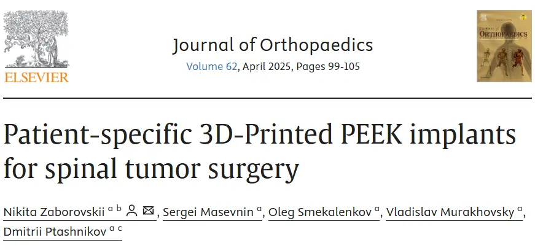
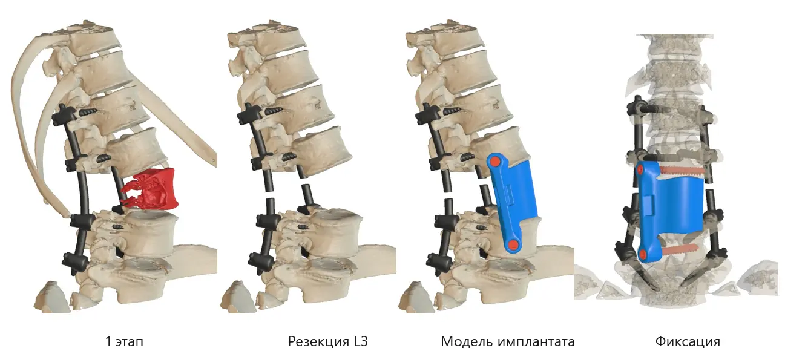

Мы с коллегами рады поделиться важным достижением в области спинальной хирургии. Наша работа, обобщающая уникальный опыт применения индивидуальных протезов тел позвонков из PEEK (полиэфирэфиркетона), была опубликована в авторитетном международном журнале Journal of Orthopaedics. В статье “Patient-specific 3D-Printed PEEK implants for spinal tumor surgery” мы представили первые в мире результаты использования протезов, созданных методом трехмерной печати из этого перспективного материала.

Современная онкология позвоночника ставит перед хирургами сложнейшую задачу: радикальное удаление новообразования с одновременным сохранением опорной функции позвоночного столба. Классические методы реконструкции долгие годы помогали решать эту проблему, однако их возможности ограничены. Внедрение технологии создания индивидуальных протезов тел позвонков из PEEK методом трехмерной печати открывает принципиально новую главу в спинальной хирургии. Эта инновация способна полностью изменить подход к реконструктивным операциям на позвоночнике.
Идеальное соответствие: почему именно PEEK?
Реконструкция позвоночного столба после удаления опухоли напоминает работу реставратора, воссоздающего утраченный фрагмент древней мозаики. Современные протезы тел позвонков из PEEK, созданные на 3D-принтере, подобны искусно выточенным элементам, в точности повторяющим анатомию конкретного пациента. Такой персонализированный подход выводит спинальную хирургию на качественно новый уровень.
Биосовместимость
Одно из самых замечательных свойств PEEK — его схожесть с костной тканью. В то время как титановые имплантаты значительно жестче кости (представьте разницу между сталью и резиной), PEEK обладает эластичностью, близкой к естественной костной структуре. Это сходство помогает предотвратить проблему “stress shielding” — ослабления костной ткани из-за того, что имплантат берет на себя слишком большую нагрузку.
Прозрачность для лучевых методов исследования
Для онкологических пациентов регулярное наблюдение имеет решающее значение. И здесь PEEK демонстрирует свое преимущество — он рентгенопрозрачен, то есть не создает помех при рентгенографии, КТ или МРТ. В отличие от металлических имплантатов, которые могут создавать артефакты на медицинских изображениях, PEEK позволяет врачам: - Четко отслеживать процесс костного сращения - Контролировать возможное появление рецидива опухоли - Более точно планировать лучевую терапию
Научная основа успеха
Надежная конструкция
3D-печатные PEEK-имплантаты создаются послойно с использованием технологии послойного наплавления (FFF). Исследования показывают, что хотя прочность 3D-печатного PEEK может быть немного ниже, чем у традиционно изготовленного материала, она все равно более чем достаточна для выдерживания нагрузок, возникающих в позвоночнике.
Продуманный дизайн
Эти имплантаты — не просто блоки материала. Они включают: - Специальные полости для костного трансплантата, способствующие естественному сращению - Индивидуально спроектированные поверхности, точно соответствующие анатомии пациента - Стратегически расположенные усиления в зонах высокой нагрузки

Практический опыт
Наш опыт применения этих имплантатов весьма обнадеживающий. У всех пациентов в нашем исследовании наблюдалась хорошая интеграция имплантатов с костной тканью, и ни у кого не возникло осложнений, связанных с имплантатами, в течение периода наблюдения. Это говорит о том, что 3D-печатные PEEK-имплантаты эффективны не только в теории, но и на практике.
Взгляд в будущее: проблемы и возможности
Несмотря на впечатляющие результаты, мы все еще находимся в процессе изучения технологии. Среди проблем можно отметить: - Длительность процесса проектирования индивидуальных имплантатов - Необходимость точного предоперационного планирования - Ограниченную гибкость при необходимости изменения хирургического плана во время операции
Однако эти сложности перевешиваются потенциальными преимуществами. По мере развития технологий и накопления опыта мы ожидаем еще лучших результатов и более широкого применения этого инновационного подхода.
Итоги
3D-печатные PEEK-имплантаты представляют собой значительный шаг вперед в хирургии опухолей позвоночника. Они объединяют в себе достижения современного материаловедения и передовые производственные технологии для создания действительно индивидуализированных решений. Хотя предстоит еще многое изучить, первые результаты позволяют предположить, что эта технология может стать новым стандартом в реконструкции позвоночника.
Инновационный подход обеспечивает: - Лучшее анатомическое соответствие - Улучшенные возможности визуализации - Механические свойства, близкие к костной ткани - Высокий потенциал долгосрочной стабильности
По мере накопления данных и совершенствования методик будущее реконструктивной хирургии позвоночника становится все более перспективным. Возможность создания индивидуально спроектированных, идеально подходящих имплантатов открывает новые горизонты в лечении сложных опухолей позвоночника и улучшении результатов лечения пациентов.
Этот блог-пост основан на недавних клинических исследованиях и опыте применения 3D-печатных PEEK-имплантатов в хирургии опухолей позвоночника. Хотя результаты многообещающие, каждый случай уникален и требует индивидуальной оценки квалифицированными медицинскими специалистами.